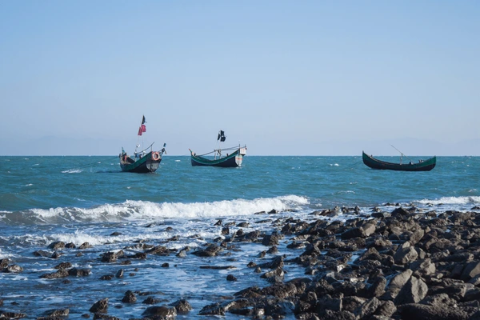

Saint Martin Island, often referred to as "Shonar Bangla," is the only coral island in Bangladesh and a hidden gem in the Bay of Bengal. Known for its crystal-clear waters, white sandy beaches, and vibrant marine life, this island is a perfect getaway for those looking to unwind amidst nature’s beauty.
Visitors can indulge in a variety of activities such as snorkeling, scuba diving, and exploring the colorful coral reefs. The island's serene beaches provide an ideal spot for relaxation and sunset viewing. You can also enjoy local delicacies, especially seafood, which is a highlight for many travelers.
Learn more about Saint Martin.